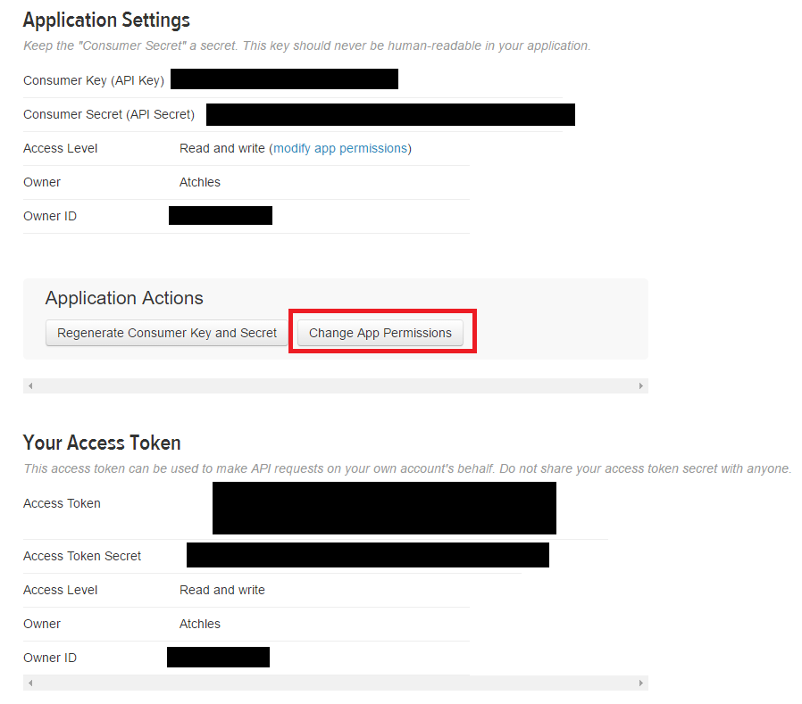

This guide won't go too much in-depth about how to setup a Twitter user account and dev account, but I'll hit the highlights. Assuming you already have a standard Twitter user account (you can make another one if you want an account specifically for development), you can sign up for a developer account here.
After you've done that, you'll need to create a Twitter app to get some credentials. Login to the Twitter dev site, and go to the Apps page which should look something like this:
Go ahead and click on the Create New App button. Fill out all the fields (you can leave the Callback URL blank for now), and don't worry too much if you aren't sure about the URL yet. You can always change it later. After you've filled everything out, go ahead and click Create Your Twitter Application.
To get these credentials, click on the Keys and Access Tokens tab. For this app, we're going to be using Direct Messaging, so make sure you set that permission. To do this, click on Change App Permissions and set it to "Read, write, and direct messages".
After you've done this, you can go ahead and generate your consumer key, consumer secret, access key, and access secret. The Twitter API uses OAuth for authentication, but it's not nearly as annoying about it as some other API's I've seen.
Once you get all of that squared away, you can continue on to the more interesting stuff: writing some code.
Previous Next